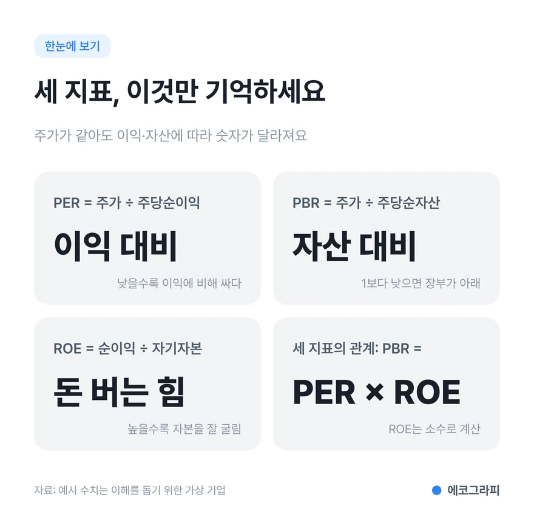
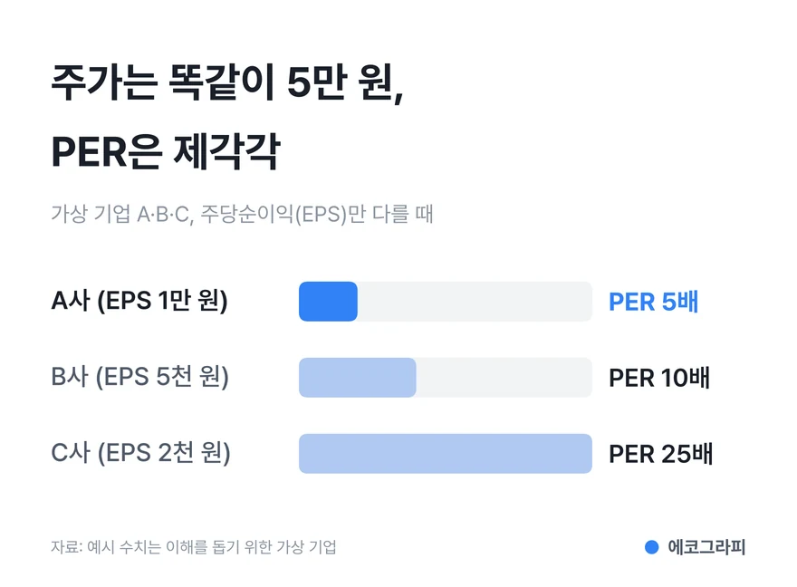
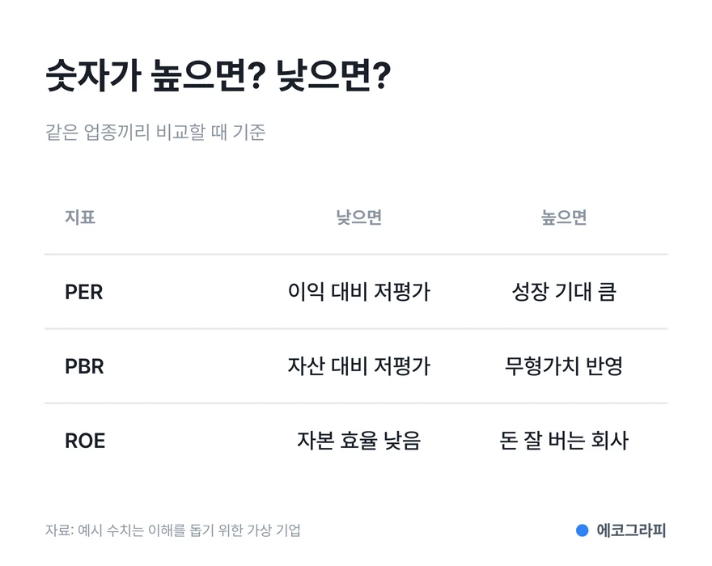
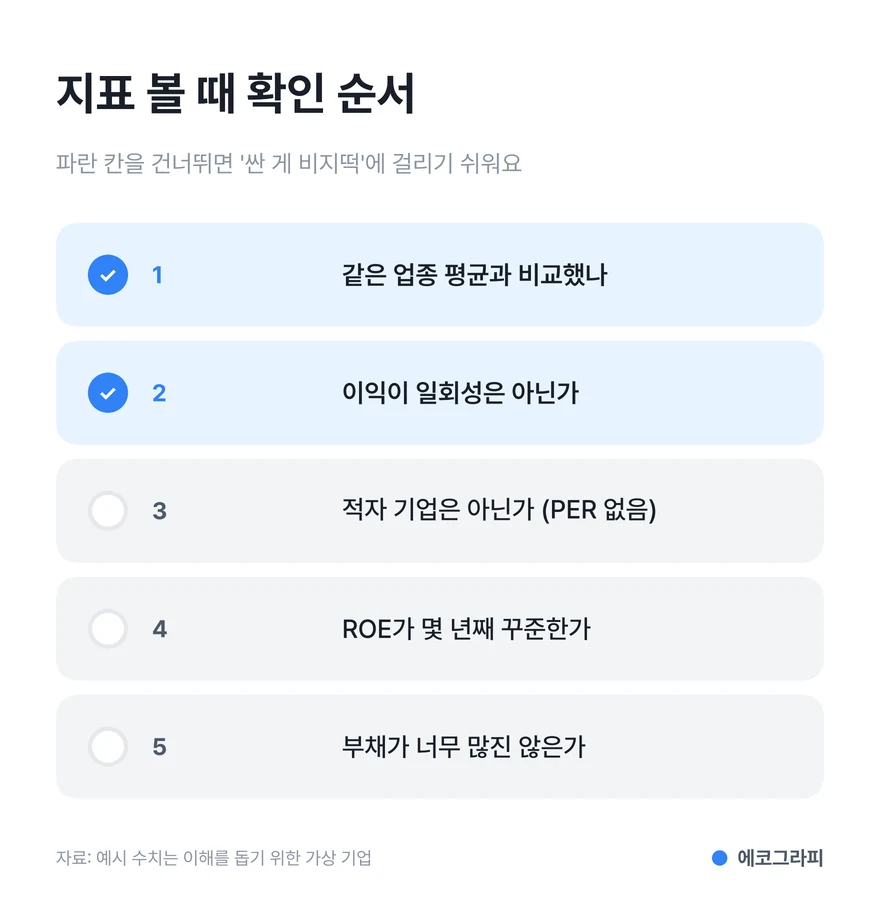

PER(주가수익비율)은 주가 ÷ 주당순이익(EPS)입니다. 회사 전체로 보면 시가총액 ÷ 1년 순이익과 같아요.
주가 5만 원, 1주당 1년에 5천 원을 버는 회사라면 PER은 10배입니다. "지금 이익이 그대로라면 10년 치 이익을 주고 사는 셈"이라고 이해하면 쉬워요.

주가가 같아도 이익이 많은 A사의 PER이 가장 낮습니다. 그렇다고 A사가 무조건 좋은 건 아니에요. C사처럼 PER이 높은 회사는 시장이 앞으로 이익이 크게 늘 것이라고 기대하고 있다는 뜻일 수 있거든요.
PBR(주가순자산비율)은 주가 ÷ 주당순자산(BPS)입니다. 순자산은 회사 자산에서 빚을 뺀 금액, 즉 '지금 회사를 정리하면 주주에게 남는 몫'이에요.
뉴스에서 말하는 '저PBR주', '밸류업'이 바로 이 지표 이야기예요. 장부 가치보다 싸게 거래되는 회사가 많아서, 주주환원을 늘려 가치를 높이자는 흐름입니다.
ROE(자기자본이익률)는 순이익 ÷ 자기자본입니다. 주주가 맡긴 돈 100원으로 1년에 몇 원을 벌었는지 보여줘요. ROE 15%면 100원으로 15원을 번 회사입니다.
예금 금리보다 ROE가 낮은 회사라면, 주주 입장에선 차라리 예금이 나을 수도 있다는 뜻이에요. ROE는 한 해보다 몇 년의 흐름을 보는 게 중요합니다.
세 지표는 하나로 연결돼 있어요. PBR = PER × ROE. 예를 들어 PER 10배에 ROE 15%(0.15)면 PBR은 1.5배입니다.

은행은 PER이 낮고 성장 산업은 높은 게 보통이에요. 업종마다 정상 범위가 다르니 다른 업종끼리 비교하면 안 됩니다. 또 땅을 팔아 생긴 일회성 이익 때문에 PER이 일시적으로 낮아 보일 수도 있어요.

지금 해볼 것: 증권사 앱에서 관심 종목을 열고 '투자지표' 또는 '기업정보' 탭을 눌러 보세요. PER·PBR·ROE와 업종 평균이 같이 나와요.
순이익이 적자면 PER을 계산할 수 없어요. 이럴 땐 매출이나 PBR 같은 다른 지표를 봅니다.
정답은 없어요. 같은 업종 평균이나 그 회사의 과거 평균과 비교해서 판단합니다.
EPS는 1주당 순이익(원), PER은 주가가 그 EPS의 몇 배인지(배)예요.
올해나 내년 예상 이익으로 계산한 PER이에요. 증권사 전망치라 실제와 다를 수 있어요.
※ 2026년 11월 기준으로 정리한 글입니다. 세율·제도는 바뀔 수 있으니 거래 전 증권사·국세청 안내를 한 번 더 확인하세요. 특정 종목·상품의 매수·매도 권유가 아닙니다.